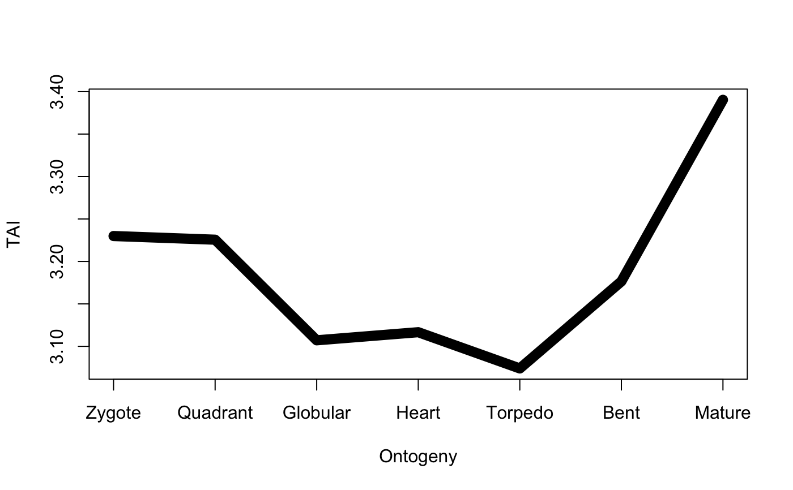
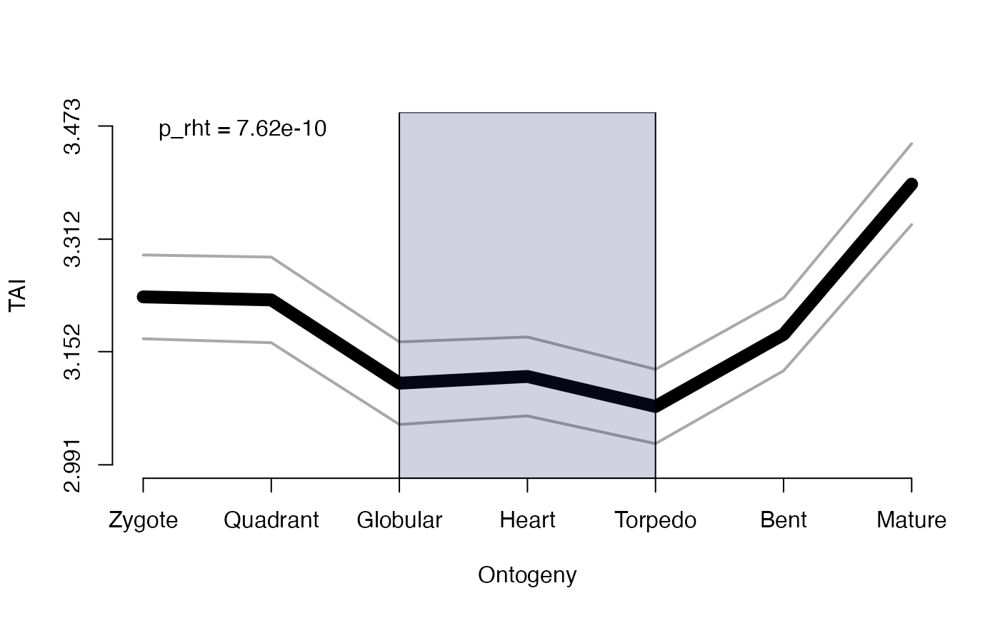
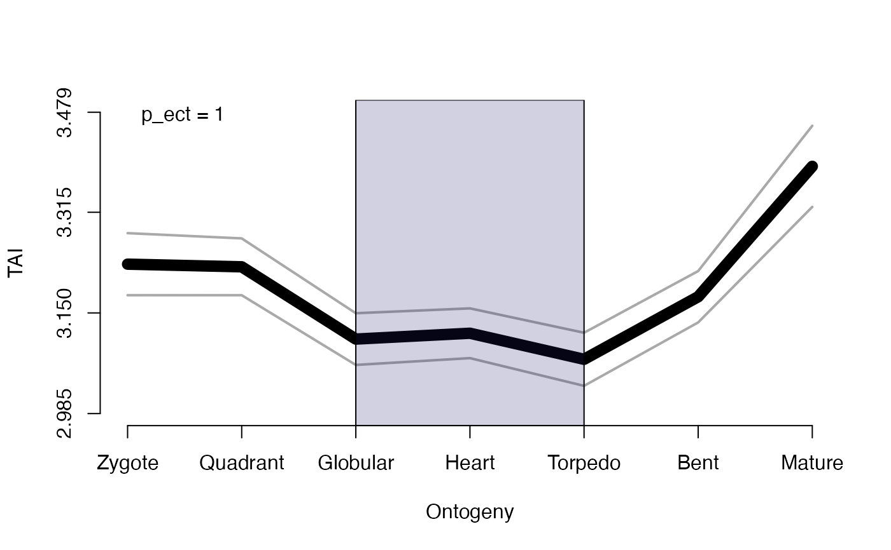
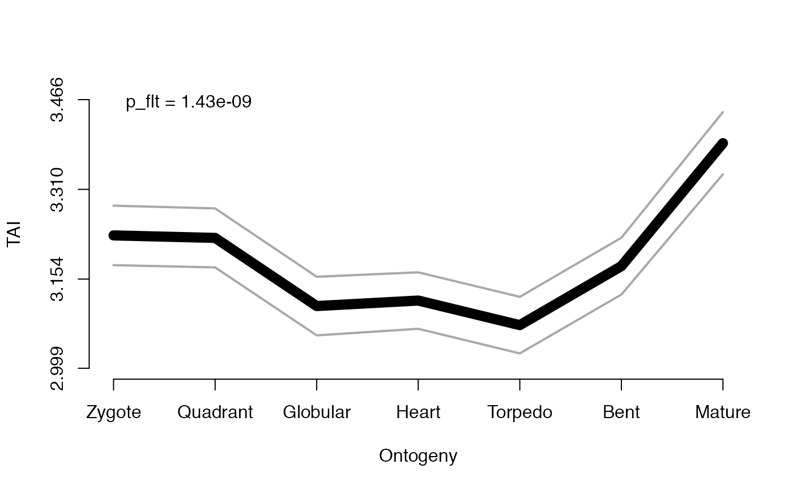

R/PlotPattern.R
PlotPattern.RdFunction to plot the TAI or TDI of a given PhyloExpressionSet or DivergenceExpressionSet object.
This function plot the TAI or TDI of a given PhyloExpressionSet or DivergenceExpressionSet object.
PlotPattern(ExpressionSet, TestStatistic = "FlatLineTest", modules = NULL, permutations = 1000, lillie.test = FALSE, digits.ylab = 4, p.value = TRUE, shaded.area = FALSE, y.ticks = 4, custom.perm.matrix = NULL, ...)
| ExpressionSet | a standard PhyloExpressionSet or DivergenceExpressionSet object. |
|---|---|
| TestStatistic | a string defining the type of test statistics to be used to quantify the statistical significance the present phylotranscriptomics pattern.
Possible values can be: |
| modules | a list storing three elements for the |
| permutations | a numeric value specifying the number of permutations to be performed for the |
| lillie.test | a boolean value specifying whether the Lilliefors Kolmogorov-Smirnov Test shall be performed. |
| digits.ylab | a numeric value specifying the number of digits shown for the TAI or TDI values on the y-axis. |
| p.value | a boolean value specifying whether the p-value of the test statistic shall be printed within the plot area. |
| shaded.area | a boolean value specifying whether a shaded area shall be drawn for the developmental stages defined to be the presumptive phylotypic period. |
| y.ticks | a numeric value specifying the number of ticks to be drawn on the y-axis. |
| custom.perm.matrix | a custom |
| … | default plot parameters. |
a plot visualizing the phylotranscriptomic pattern of a given PhyloExpressionSet or DivergenceExpressionSet object.
The corresponding p-value of the test statistic is named as follows:
p_flt = p-value of the corresponding FlatLineTest
p_rht = p-value of the corresponding ReductiveHourglassTest
p_ect = p-value of the corresponding EarlyConservationTest
This function computes a permutation test quantifying the statistical significance of the prensent phylotranscriptomics pattern.
The user can choose between the FlatLineTest, ReductiveHourglassTest, or EarlyConservationTest.
The FlatLineTest tests for any significant deviation from a flat line.
Each period or stage that significantly deviates from a flat line, might be governed by stronger selective pressure (in terms of natural selection) compared to other stages or periods of development.
The ReductiveHourglassTest specificly tests for the statistical significance of a molecular hourglass pattern (high-low-high pattern) with prior biological knowlegde.
The corresponding p-value that is printed within the plot (by default) specifies the statistical significance of the chosen test statistic.
The EarlyConservationTest specificly tests for the statistical significance of a low-high-high pattern (monotonically increasing function)
with prior biological knowlegde.
The corresponding p-value that is printed within the plot (by default) specifies the statistical significance of the chosen test statistic.
The x-axis denotes the developmental series (time course / experiments / ontogeny) of the input ExpressionSet and the y-axis
denotes the corresponding mean transcriptome age value (TAI or TDI) of the given ExpressionSet.
Furthermore, the grey lines above and below the actual phylotranscriptomics pattern denotes the standard deviations of TAI or TDI
values that have been estimated from the bootMatrix.
A low mean transcriptome age value denotes an evolutionary older transcriptome being active during the corresponding periods,
whereas a high mean transcriptome age value denotes an evolutionary younger transcriptome being active during the corresponding periods.
For mean transcriptome divergence, a low mean transcriptome divergence value denotes a more conserved transcriptome
being active (between two species), whereas a high mean transcriptome divergence value denotes a more divergent transcriptome
being active (between two species) - in terms of protein-sequence substitution rates.
This function is useful to fastly plot the TAI or TDI
profile of a given PhyloExpressionSet or DivergenceExpressionSet object and
the statistical significance of the corresponding pattern.
Internally the function calls several graphics functions,
such as plot, axis, and legend.
For the ellipsis argument ... all graphics specific arguments can be defined.
Internally the function specific arguments for e.g. plot, axis,
and legend will be detected and are passed to the corresponding function.
Hence, when calling the function PlotPattern, one can specify arguments
for plot and axis and legend
as ....
In case prior biological knowledge is present for a specific period of development,
the shaded.area argument can be set to TRUE and the function will use
the values stored in the mid argument to draw a shaded area within the corresponding period of development.
Domazet-Loso T and Tautz D. (2010). A phylogenetically based transcriptome age index mirrors ontogenetic divergence patterns. Nature (468): 815-818.
Quint M et al. (2012). A transcriptomic hourglass in plant embryogenesis. Nature (490): 98-101.
Drost HG et al. (2015) Evidence for Active Maintenance of Phylotranscriptomic Hourglass Patterns in Animal and Plant Embryogenesis. Mol Biol Evol. 32 (5): 1221-1231 doi:10.1093/molbev/msv012.
# load PhyloExpressionSet data(PhyloExpressionSetExample) # only visualize the TAI profile without any test statistics... # this is equavalent to performing: plot(TAI(PhyloExpressionSetExample), type = "l", lwd = 6) PlotPattern(ExpressionSet = PhyloExpressionSetExample, TestStatistic = NULL, type = "l", xlab = "Ontogeny", ylab = "TAI", lwd = 9)# the simplest example of plotting the TAI profile of a given PhyloExpressionSet: # In this case (default) the FlatLineTest will be performed to quantify # the statistical significance of the present TAI pattern and will be drawn as 'p = ... ' # in the plot PlotPattern(ExpressionSet = PhyloExpressionSetExample, TestStatistic = "FlatLineTest", permutations = 100, type = "l", xlab = "Ontogeny", ylab = "TAI", lwd = 9)# an example performing the ReductiveHourglassTest and printing the p-value # and shaded area of the presumptive phylotypic period into the plot # Here the 'p = ...' denotes the p-value that is returned by the ReductiveHourglassTest PlotPattern( ExpressionSet = PhyloExpressionSetExample, TestStatistic = "ReductiveHourglassTest", modules = list(early = 1:2,mid = 3:5,late = 6:7), permutations = 100, p.value = TRUE, shaded.area = TRUE, xlab = "Ontogeny", ylab = "TAI", type = "l", lwd = 9)# testing for early conservation model PlotPattern( ExpressionSet = PhyloExpressionSetExample, TestStatistic = "EarlyConservationTest", modules = list(early = 1:2,mid = 3:5,late = 6:7), permutations = 100, p.value = TRUE, shaded.area = TRUE, xlab = "Ontogeny", ylab = "TAI", type = "l", lwd = 9)# use your own permutation matrix custom_perm_matrix <- bootMatrix(PhyloExpressionSetExample,100) PlotPattern(ExpressionSet = PhyloExpressionSetExample, TestStatistic = "FlatLineTest", custom.perm.matrix = custom_perm_matrix, type = "l", xlab = "Ontogeny", ylab = "TAI", lwd = 9)